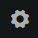
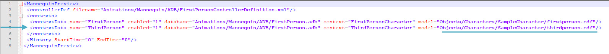
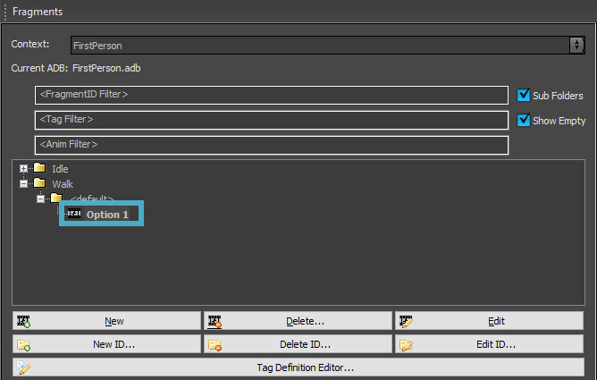

Обзор
Теперь, когда вы импортировали своего персонажа в CRYENGINE, вы можете использовать его в качестве игрового персонажа. Следуйте инструкциям ниже, чтобы узнать, как это сделать.
Предварительные условия
Персонаж со скелетом, сеткой и анимацией, импортированный в CRYENGINE (см. предыдущие уроки).
Visual Studio (если вы не можете позволить себе полную версию, доступна бесплатная версия от сообщества). здесь.)
Создание нового решения
- В панели запуска CRYENGINE нажмите на значок шестеренки.

Щелкните правой кнопкой мыши на Game.cryproject файл и выберите Создать решение. Появится окно командной строки, в котором будет выполнено несколько действий. Это займет некоторое время.
Он будет завершен, когда командная строка закроется.
Открытие игрового решения
- новый решения папка должна была появиться после предыдущих шагов. В этом решения папку, откройте Win64 подпапку и double нажмите на Game.sln файл. Это должно открыть этот файл в Visual Studio;
Когда он откроется, в обозревателе решений перейдите к Проект → Игра → Компоненты и открыть Player.cpp;
Вы также можете использовать панель «Поиск решений» в верхней части Обозревателя решений для поиска Player.cpp.
Импорт ваших анимаций
Если вы еще этого не сделали, импортируйте свои анимации в CRYENGINE. Это часть рабочего процесса экспорта и импорта, описанного в предыдущий урок.
Зарегистрируйтесь Character Tool
Чтобы убедиться, что анимации работают правильно, вы можете проверить их в Character Tool:
- Откройте Character Tool, перейдя в Инструменты → Анимация → Character Tool;
- На панели «Ресурсы» в разделе «Персонажи» перейдите к своему персонажу и откройте его;
- Нажимая на анимации, перечисленные в разделе «Анимации», вы можете проверить импортированные вами анимации.
Изменение кода в Visual Studio
- Развернуть Visual Studio;
В Player.cpp, найдите строку, в которой упоминается SetCharacterFile и измените путь на путь и имя файла вашего персонажа;
Обычно это должна быть строка 37–40, но это может измениться в зависимости от любых обновлений, которые могут быть внесены в этот файл.
Однако он будет следовать за комментарием// Set the player geometry, this also triggers physics proxy creation.- Закрыть CRYENGINE;
В главном меню в Visual Studio нажмите Сборка → Сборка решения или Построить игру;
БЕсли другие проекты зависят от проекта, который вы хотите создать, рекомендуется использовать Build Solution вместо Build Game.
- Когда этот процесс завершится, сохраните и закройте Visual Studio.
Изменение файла предварительного просмотра
- В папке проекта перейдите к Ресурсы → Анимации → Mannequin → Предварительный просмотр;
- Откройте Player.xml файл с помощью Блокнота, Notepad++ или другого программного обеспечения, позволяющего читать и редактировать файлы .xml;
- Как и в Visual Studio, измените путь модели на путь, по которому находится ваш персонаж. В прилагаемой серии видеоуроков сделана игра от третьего лица, поэтому вам придется изменить модель ThirdPersonCharacter:

Предварительный просмотр файла - Сохраните и закройте файл. Теперь ваш персонаж станет игровым персонажем.
Проверка персонажа в игре
- Откройте CRYENGINE и создайте новый уровень или откройте существующий;
- Зайди в игру с Ctrl + Г;
- Теперь вы должны увидеть своего персонажа в Т-позе;
Mannequin Настройка
Хотя ваш персонаж теперь будет игровым персонажем, его анимация еще не назначена ему, поэтому все, что вы увидите, это ваш персонаж в Т-позе.
- Откройте редактор Mannequin, перейдя в Инструменты → Анимация → Редактор Mannequin;
- В редакторе Mannequin перейдите к Файл → Загрузить настройки предварительного просмотра..., перейдите к Анимации → Mannequin → Предварительный просмотр и открыть Player.xml;
- На панели «Фрагменты» разверните все параметры в разделе Прогулка и double-нажмите Вариант 1:

Прогулка Вариант 1 - В правом нижнем углу есть два слоя анимации: один для первого лица (FirstPerson(FirstPerson) и один для третьего лица (ThirdPerson(ThirdPerson), оба с уже настроенной анимацией. Поскольку в этом уроке предполагается, что вы выполняете проект от третьего лица, щелкните слой анимации для ThirdPerson (цветная полоса), затем нажмите Анимация в Свойства анимационного клипа, нажмите на просматривать кнопка

Повторите шаги 3 и 4 для анимации ожидания в разделе Ожидание → <по умолчанию> → Вариант 1;
Для большего разнообразия, например, анимации бездействия, вы можете настроить несколько анимационных клипов для одной и той же ситуации.
1. В Фрагменты панель, выберите <по умолчанию> папка для анимации Idle или Walk (в зависимости от того, куда вы хотите добавить анимационный клип);
2. Нажмите Новый внизу панели;
3. В папке <default> появится новый параметр. Повторите шаги 3 и 4, чтобы добавить еще один анимационный клип. Движок автоматически выберет один из двух анимационных клипов, когда персонаж бездействует или идет, в зависимости от того, куда вы добавили анимационный клип.NOTE: Возможно, вам придется добавить слой анимации в правом нижнем углу. Это можно сделать, щелкнув правой кнопкой мыши на ThirdPerson(ThirdPerson) текст и выбор Добавить слой → Анимационный слой.
- Сохраните все изменения, перейдя в Файл → Сохранить изменения.
- Зайди в игру с Ctrl + Г и проверьте свою анимацию, прогуливаясь вместе со своим персонажем.
Вы заметите, что персонаж при вращении вернется в Т-позу. Это связано с тем, что не была назначена анимация вращения. - Если у вас нет конкретной анимации вращения, вы можете пока просто использовать анимацию ходьбы:
В Фрагменты панель, перейдите к Ожидание → Поворот → Вариант 1 и выберите Простой анимацию, как это было сделано ранее в шагах 3 и 4.
Чтобы настроить правильное вращение, вам нужно настроить пространства смешивания. Следуйте следующему руководству, чтобы узнать, как это сделать.